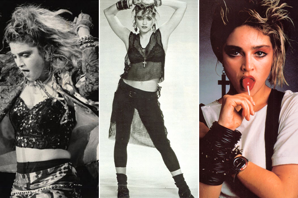
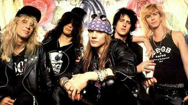

Música • 5 de julio '23
Sumérgete en el universo mágico de 'Thriller', el álbum que catapultó a Michael Jackson a la cima de la industria musical y redefinió el concepto de videoclips. Descubre cómo este fenómeno mundial revolucionó la música pop y dejó una huella imborrable en la cultura popular de los años 80

Música • 5 de julio '23
Recuerda los icónicos hits y el estilo revolucionario de Madonna en los años 80. Explora cómo esta audaz artista desafió las normas y se convirtió en una de las figuras más influyentes de la música pop, dejando un legado imborrable en la cultura de la época.
Música • 5 de julio '23
Revive la época dorada del rock con Queen, la legendaria banda que conquistó los escenarios de los años 80. Explora su música icónica, sus actuaciones electrizantes y el impacto duradero que dejaron en la cultura musical de la década más vibrante del siglo XX.
Música • 5 de julio '23
Explora la poderosa música y la inquebrantable pasión de U2 durante los años 80. Desde su emblemático álbum 'The Joshua Tree' hasta sus himnos de protesta, descubre cómo esta banda irlandesa se convirtió en un fenómeno global y dejó una huella perdurable en la historia del rock.

Música • 5 de julio '23
Adéntrate en el salvaje mundo del rock de los años 80 con Guns N' Roses. Desde su álbum debut 'Appetite for Destruction' hasta su icónica imagen de rebeldía, descubre cómo esta banda conquistó los escenarios y se convirtió en uno de los mayores fenómenos del hard rock, dejando una marca imborrable en la música de la década.